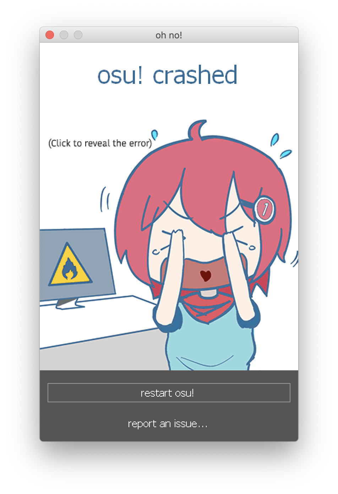

Troubleshooting Basics¶
This article is designed to give you the basics in troubleshooting osu!mac issues. It contains information on how to generate a report, troubleshooting techniques specific to Wine, and tips for communicating with other people in the osu!mac community.
Accessing the insides of your Wineskin¶
Generally speaking, you can access the Package Contents of your Wineskin by right clicking on osu!.app and selecting Show Package Contents.
Three items should now appear:
Contents is a directory that Wineskin uses to store all its files - generally you won’t need to access this folder for troubleshooting
drive_c_ is an alias (shortcut) that represents a Windows filesystem which Wine imitates
Wineskin is the program you use to manage, edit, and troubleshoot your Wineskin
Locating osu! crash logs¶
Just like on Windows, osu! will generate it’s own crash logs that can be useful for troubleshooting.
If a dialog like the one below appears:
Click on the window. You should be able to view the crash logs now:

You can also find more logs under the Logs folder in your drive_c directory. To do this:
Locate where
osu!.appis installedRight click on it and select Show Package Contents
You should now see three files/folders:
Contents,drive_candWineskin. Clickdrive_cThen, click
osu!Select
Logs
Your log files should be present here.
Generating a report with osu!macOS Agent¶
To generate a report with Technocoder’s osu!macOS Agent:
Open osu!macOS Agent (duh)
Click the Troubleshoot report
Click Scan
Upon completion of the scan, click Copy Report
Save this to a text file or someplace where you won’t forget
Tip
osu!macOS Agent is a useful program every osu-stable player under Wine should have!
Generating logs for Wineskin¶
If your Wineskin isn’t starting or working properly, you can try diagnosing the issue with a Test Run of your Wineskin, that will produce logs that will describe any problems in detail.
To generate a Wineskin log:
Open the Wineskin program by following these instructions
Click the Advanced tab
Click the Test Run button
If osu! starts, you can close the program immediately (unless you need to test an issue that occurs at a particular moment in time, like when editing beatmaps)
A window like the one below will appear. Click Yes

Two plain-text files will appear. One contains information about your system and Wineskin, while the other provides a log of errors, warnings and events that were recorded while your Wineskin was operating.
Save both of these to a text file or someplace where you won’t forget. If you’re generating logs for another person, you can use a pastebin such as paste.ubuntu.com to share your log files with them.
Communicating your issues with other people¶
We want to help you get osu! running on your macOS-powered device, so to make the process as easy as possible for everyone involved, it’s important to be clear and concise right from the get-go.
Please do:
See the Common issues section to see if there’s a fix you can try
Describe your issue in lots and lots of detail
You can make a distinction between expected behaviour (what you think is supposed to happen) and actual behaviour (what actually ends up happening) in your issue report
Provide information on when/why your issue happens (if you know)
Provide information about your computer specs and the wrapper you used
Attach screenshots and log files (from both osu!macOS Agent and Wineskin
Tell us what you’ve already tried to do
The best place to report issues is on the osu! forums - make sure you put macOS in the title of your post (so other people know ofc).